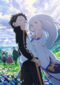

MANGA & ANIME HOME VIDEO
A fantasy world where every failure leaves a mark.

Season 3 expands the conflict into a public crisis where alliances, cults, and competing claims collide. Subaru’s role becomes more strategic as he gathers allies and learns to lead without pretending he can carry every burden alone.
Re:Zero uses its season structure to make character growth visible through consequence. Subaru cannot simply restart his way to a perfect answer; each attempt exposes another weakness in his assumptions. The fantasy setting becomes more compelling as its characters gain histories, motives, and relationships that resist simple rescue.
The strongest material comes from the tension between persistence and limitation. Subaru’s ability creates knowledge, but knowledge is only useful when he communicates, listens, and chooses the right allies. The season’s emotional pressure works because failure changes how he sees himself and the people around him.
This season deepens Re:Zero’s central idea that a second chance is not the same as an easy life. Its mysteries, confrontations, and relationships build toward a more mature understanding of responsibility.
Open the official Sword Art Online listing →